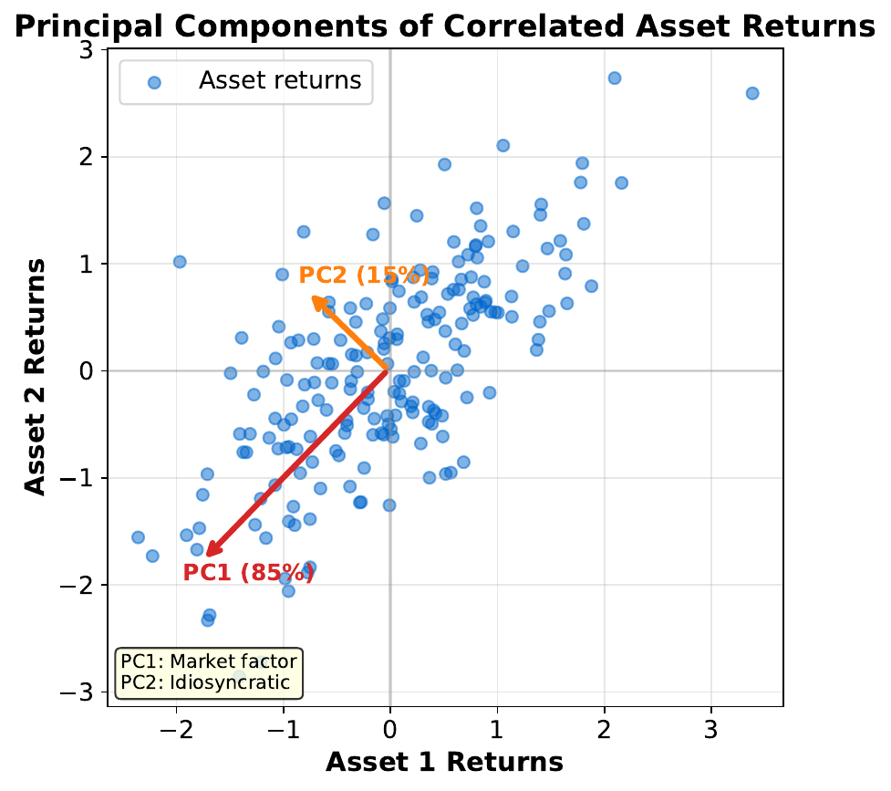
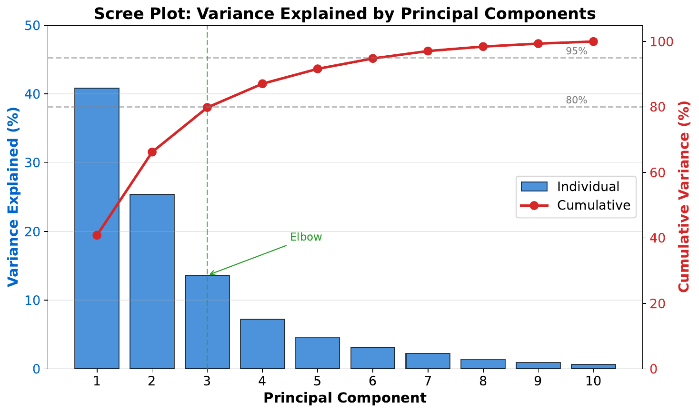
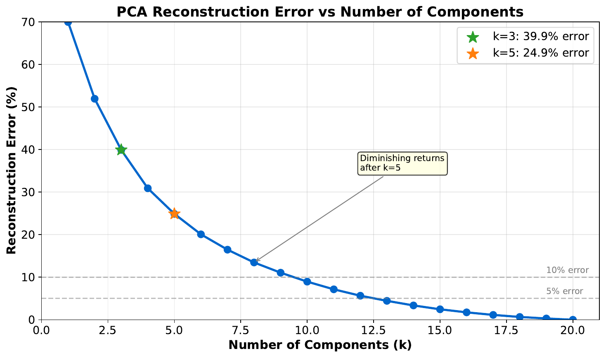
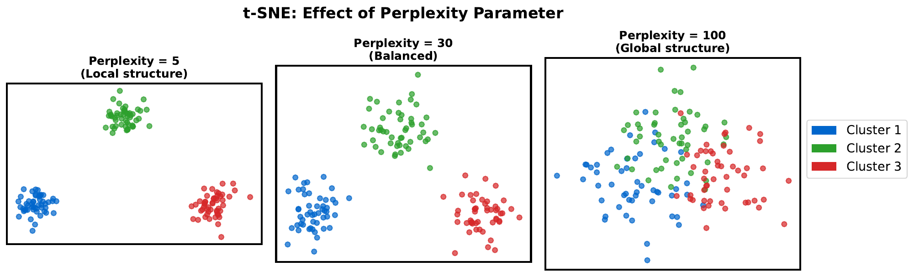
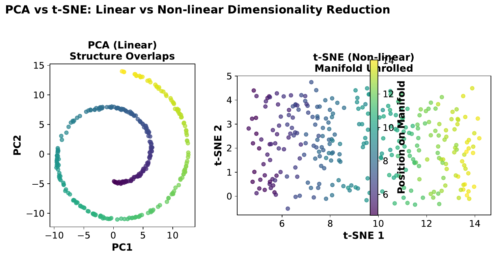

"Too Many Numbers"
| Stock | Return (%) | Volatility (%) | Volume (M) | P/E | Beta |
|---|---|---|---|---|---|
| AAPL | 12 | 22 | 80 | 28 | 1.2 |
| MSFT | 15 | 25 | 65 | 32 | 1.3 |
| JPM | 8 | 18 | 45 | 12 | 1.1 |
| GS | 10 | 28 | 30 | 10 | 1.4 |
| JNJ | 6 | 12 | 25 | 18 | 0.7 |
| PFE | 7 | 15 | 35 | 15 | 0.8 |
Your Task
- Can you visualize all 5 dimensions on paper?
- Which features seem to move together (correlated)?
- If you could keep only 2 summary features, what would they capture?
Reveal Solution
With 5 features, direct visualization is impossible. But notice: Return and Beta move together, Volatility and Beta move together. PCA finds the best linear combinations that capture the most variance. The first principal component might be a "risk" factor, the second a "size" factor.
"Find the Direction of Maximum Spread"

Your Task
- If you had to summarize this 2D cloud with one line, where would you draw it?
- Why along the widest spread?
- What does the second arrow capture?
Reveal Solution
The first principal component (PC1) points in the direction of maximum variance. Projecting onto this direction loses the least information. PC2 is perpendicular to PC1 and captures the remaining variance. Together they form a new coordinate system aligned with the data's natural axes.
"How Many Components?"

Your Task
- How much variance does the first component capture?
- At which component does adding more stop helping much?
- If you keep 3 components, roughly what percentage of total variance do you retain?
Reveal Solution
The scree plot shows explained variance per component. Look for the "elbow" -- where the curve flattens. Components after the elbow add little. A common rule: keep enough components to explain 90-95% of total variance. This is dimensionality reduction -- fewer features, nearly the same information.
"Compress and Reconstruct"

Your Task
- What information was lost when reducing to fewer components?
- Is the reconstruction close to the original?
- When is a lossy approximation acceptable?
Reveal Solution
PCA reconstruction: $\hat{X} = X_{\text{reduced}} \cdot W^T$. With fewer components, fine details are lost but major patterns are preserved. Acceptable when: the lost variance is noise, or you need speed/storage savings. This is similar to JPEG compression -- lose some detail, keep the essence.
"The Map of Similarities"

Your Task
- Which points are clustered together?
- Does the distance between clusters have meaning?
- The same data is shown 3 times with different settings -- what changed?
Reveal Solution
t-SNE is a nonlinear method that preserves local neighborhoods -- similar points stay close. But unlike PCA, distances between distant clusters are NOT meaningful. The perplexity parameter controls how many neighbors each point considers: low perplexity = tight clusters, high perplexity = more global structure.
"PCA vs. t-SNE: Which to Use?"

Your Task
- Which visualization preserves global distances better?
- Which shows clusters more clearly?
- Can you apply t-SNE to new data without recomputing everything?
Reveal Solution
PCA: linear, fast, invertible, preserves global structure -- use for feature reduction, preprocessing, or when you need to transform new data. t-SNE: nonlinear, slow, not invertible, reveals clusters -- use for visualization only. You cannot apply a t-SNE mapping to new points without rerunning on the full dataset.